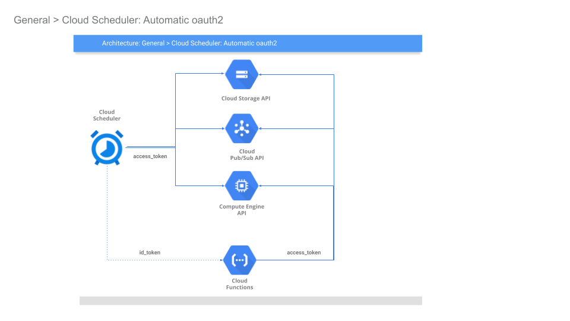
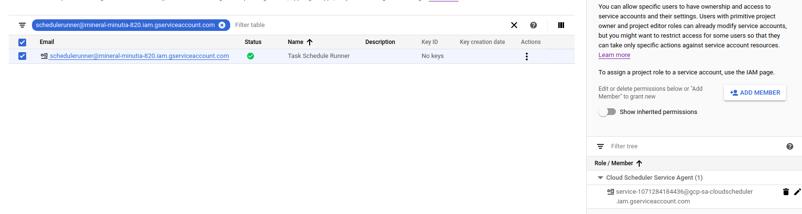
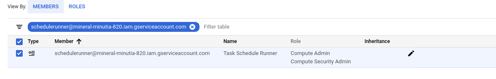
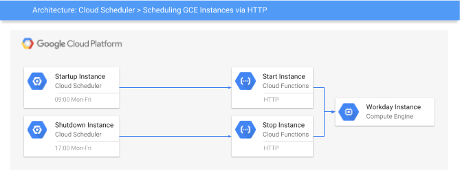
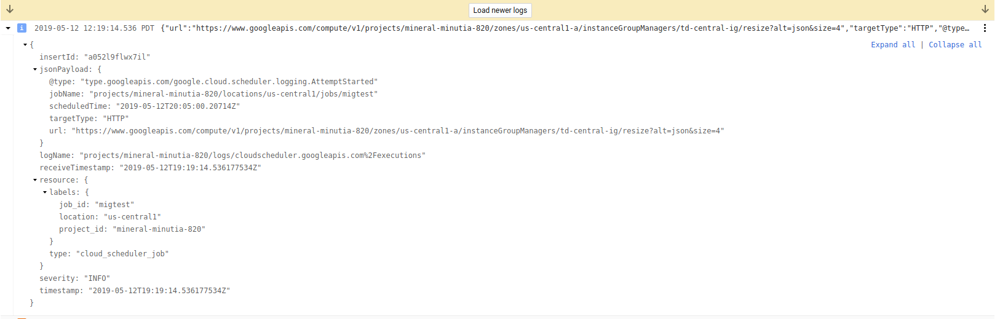
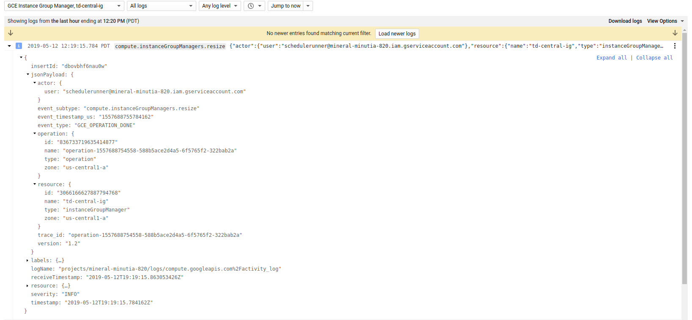

ARTICLES
Automatic oauth2: Using Cloud Scheduler and Tasks to call Google APIs
A month ago or so I tried out a pretty versatile feature in Cloud Scheduler and Cloud Tasks and Cloud Tasks that emits OpenIDConnect or oauth2 access_token to outbound webhook calls.
When a Scheduled task fires and calls an HTTP endpoint, it can optionally automatically carry credentials for use with a GCP REST Endpoint. What does that mean? Well, you can automatically trigger most Google APIs directly do to any number of things on schedule or as a task instead of creating and running a cron elsewhere. In this article, we will focus on access_tokens and some usage cases with examples with Cloud Scheduler. A followup article covers id_tokens.
Essentially, the access_token furnished to Scheduler and Tasks can be used along with a constructed REST payload against GCP services and when you define the Schedule, you specify the REST payload it should send (eg. POST JSON payload for the specific API getting invoked.)
Note: these access_token do not by themselves allow access to any GCP resource: you must explicitly allow the identity that the token belows to IAM permissions first.
The two examples covered in this article are relatively trivial but demonstrates its capabilities:
1) Update Cloud Armor Firewall rule
2) Increase the number of instances in a Compute Managed Instance Group Scheduling tasks like automatically scaling VM instances has been describe many times before. Infact, its in the product documentation here.
Ofcourse these are just two examples and as mentioned, you can use this technique for almost all GCP APIs subject to the caveat described at the end.
This is one in a series where I’ll be using various google services to automatically emit credentials. This article focuses on emitting oauth2 access token while the followup focuses on openid connect tokens.
That is, this article focuses on (A) below, while the second part in the series is (B)
A) oauth2
access_tokens- would allow you to directly call a Google Rest API endpoint
- https://developers.google.com/identity/protocols/OAuth2
B) Google-issued OpenID Connect
id_tokens- would allow you to call any arbitrary endpoint which accepted an OpenID
id_tokenin the payload. - https://openid.net/specs/openid-connect-core-1_0.html#CodeIDToken
- would allow you to call any arbitrary endpoint which accepted an OpenID
For more information about the above two authentication systems, see:
Supported Services
So…what emits (and consumes) an access_token or an id_token?
oauth2 (access_token)
These are primarily used to access a google cloud API…DO not send these tokens out to any other endpoint!!
[Cloud Scheduler, Cloud Tasks] -->
**emit** `access_token` --> to Any --> [ GCP REST API endopoint ]
OIDC (id_token)
These are used to identify the caller (its just a google-signed JWT with some claims)
[Cloud PubSub, Cloud Scheduler, Cloud Tasks] -->
**emit** `id_token`--> to Any of:
[ Cloud Run, Cloud Functions, Cloud Enpoints, Istio, {your application} ]
Specific services like Cloud Run, Cloud Functions and Cloud Endpoints can automatically validate the inbound id_token and check if it is properly signed by Google. Furthermore, you can apply IAM policies for the user or service account associated with said token. In other words, you can construct an IAM policy on Cloud Run that states “only allow this service account access where that account is one associated with a Cloud Scheduler job.
And as an overview of the sources you can trigger http targets from with Cloud Scheduler:

Cloud Scheduler
In this section, we will use Cloud Scheduler to automatically manipulate the above mentioned GCP APIs and services
First you will need gcloud installed and the beta apis enabled since the command switches are exposed there currently:
The parameters specific to oauth2 are:
gcloud beta scheduler jobs create http ..
[[--oauth-service-account-email=OAUTH_SERVICE_ACCOUNT_EMAIL
: --oauth-token-scope=OAUTH_TOKEN_SCOPE]
Create Service Account
First setup a specific service account you wish to scheduler to invoke the endpoint as. This is the service account that scheduler will run as and acquire the access_token for. The section after this, we will apply IAM policies for this service account.
Note: Cloud Scheduler by default runs with a service account in the format service-$PROJECT_NUMBER@gcp-sa-cloudscheduler.iam.gserviceaccount.com
For other services:
- Cloud Scheduler: service-$PROJECT_NUMBER@gcp-sa-cloudscheduler.iam.gserviceaccount.com
Cloud Tasks: service-$PROJECT_NUMBER@gcp-sa-cloudtasks.iam.gserviceaccount.com
Setup environment variables
export PROJECT_ID=`gcloud config get-value core/project` export PROJECT_NUMBER=`gcloud projects describe $PROJECT_ID --format='value(projectNumber)'`- Create Scheduler Service Account
gcloud iam service-accounts create schedulerunner --display-name="Task Schedule Runner" $ gcloud iam service-accounts list NAME EMAIL DISABLED Task Schedule Runner schedulerunner@$PROJECT_ID.iam.gserviceaccount.com FalseCreate a policy file
(remember to substitute your PROJECT_NUMBER)
svc_policy.json:{ "bindings": [ { "members": [ "serviceAccount:service-$PROJECT_NUMBER@gcp-sa-cloudscheduler.iam.gserviceaccount.com" ], "role": "roles/cloudscheduler.serviceAgent" } ], }- Apply Policy file so Scheduler can impersonate
$ gcloud iam service-accounts set-iam-policy schedulerunner@$PROJECT_ID.iam.gserviceaccount.com svc_policy.json -q

Assign IAM Roles to Scheduler to invoke Endpoints
Now to actually use this..This example requires two IAM roles assigned to the acting service account so enable
roles/compute.securityAdminroles/compute.admin
on the impersonated account

Scheulder –> Compute/MIG
The first scenario this tutorial demonstrates is altering the number of instances in a Managed Instance Group. This tutorial assumes you’ve setup a MIG called td-central-ig.
(Yes, i understand, you can already Autoscale MIG)

$ gcloud compute instance-groups managed list
NAME LOCATION SCOPE BASE_INSTANCE_NAME SIZE TARGET_SIZE INSTANCE_TEMPLATE AUTOSCALED
td-central-ig us-central1-a zone td-central-ig 1 1 td-template no
Altering the number of instances in a MIG is achieved by a REST API call that sets the new size via query parameter.
Take a close look at the API you are interested in and use the documentation links provided or the API Explorer to construct the required call.
In this case, we need an empty POST to
Since this is just a demonstration, we will alter the count every five minutes [`5 * * * *`] (yes, its unrealistic but you get the idea...).
```bash
gcloud beta scheduler jobs create http migtest --schedule "5 * * * *" --http-method=POST \
--uri="https://www.googleapis.com/compute/v1/projects/$PROJECT_ID/zones/us-central1-a/instanceGroupManagers/td-central-ig/resize?alt=json&size=4" --oauth-service-account-email=schedulerunner@$PROJECT_ID.iam.gserviceaccount.com \
--message-body="" \
--headers=Content-Type=application/json \
--oauth-token-scope=https://www.googleapis.com/auth/cloud-platform
This API returns a Long Running Operation (LRO) object which is NOT the final outcome of the API but just a handle. This means all the Scheduled invocation indicates is that the job was submitted successfully or not..it does not indicate if the MIGs actually scaled up and completed. For more details on this, please see the section on LRO below.
Note: For security reasons,
access_tokenswill not be sent to non google API endpoints.
For the impatient, invoke the scheduled job now
gcloud beta scheduler jobs run migtest
and check its output in the logs (and ofcourse, view the four new instances)
- Scheduler invocation logs

- MIG logs

Scheduler –> Cloud Armor
In this section, we will use Scheduler to construct a full POST payload that adds an IP address to the list of allowed firewall rules Cloud Aromor allows. That is, we will use the
- securityPolicies/patchRule endpoint described here
POST https://www.googleapis.com/compute/beta/projects/$PROJECT_ID/global/securityPolicies/stopcorp/patchRule?priority=1 HTTP/1.1
Authorization: Bearer [YOUR_ACCESS_TOKEN]
Accept: application/json
Content-Type: application/json
{
"match": {
"config": {
"srcIpRanges": [
"73.162.112.208/32"
]
},
"versionedExpr": "SRC_IPS_V1"
}
}
In the example above, we’re adding a single allowed IP address to the stopcorp Cloud Armor allow policy.
Since we need to post data, we’ll first construct the parameters in a file:
- Create a file
armor_rule.jsonwith the specifications
{
"match": {
"config": {
"srcIpRanges": [
"73.162.112.208/32"
]
},
"versionedExpr": "SRC_IPS_V1"
}
}
Then specify the parameters in the job
gcloud beta scheduler jobs create http armortest --schedule "5 * * * *" --http-method=POST \
--uri=https://www.googleapis.com/compute/beta/projects/$PROJECT_ID/global/securityPolicies/stopcorp/patchRule?priority=1 \
--oauth-service-account-email=schedulerunner@$PROJECT_ID.iam.gserviceaccount.com \
--message-body-from-file=armor_rule.json \
--headers=Content-Type=application/json \
--oauth-token-scope=https://www.googleapis.com/auth/cloud-platform
As above, you can view the invocation logs and verify the policy got updated.
Dynamic Payloads
Certain GCP APIs require dynamic payloads such has uniqueID fields or strings that specify a ‘per invocation’ setting cannot be specified within a Schedule Job.
For example, the specifications to launch a Dataflow Job describes a dynamic, unique parameter within the LaunchTemplate: jobName: “The unique name to assign to the job.”. The configuration of Cloud Scheduler does NOT allow for dynamic variables.
The workaround for this is to invoke the dataflow job through Cloud Functions:
Cloud Scheduler–>Cloud Functions–>Dataflow Job
You can enforce authentication between Cloud Scheduler and Functions using id_tokens while from Functions -> Dataflow you will need to acquire an access_token manually:
The snippet of the code between GCF and (in this case), Cloud Build looks like:
import google.auth
import google.auth.transport.requests
from google.auth.transport.requests import AuthorizedSession
import requests
def cloudbuild_app_python(request):
credentials, project = google.auth.default()
request = google.auth.transport.requests.Request()
credentials.refresh(request)
CICD_PROJECT_ID = 'mineral-minutia-820'
DEPLOY_TO_DEV_TRIGGER_ID = 'd19a0b40-02fd-4b92-a81d-2efb67d1dd9d'
trigger_run_url = "https://cloudbuild.googleapis.com/v1/projects/{}/triggers/{}:run".format(CICD_PROJECT_ID, DEPLOY_TO_DEV_TRIGGER_ID)
headers = {
'Content-Type': 'application/json'
}
repo_source = {
"repoName": "myrep",
"branchName": "master"
}
authed_session = AuthorizedSession(credentials)
r = authed_session.post(url=trigger_run_url, headers=headers, data=json.dumps(repo_source))
print(r.status_code)
print(r.json())
return str(r.json())
Long Running Operations
Many GCP APIs return Long Running Operations which is just a futures handle to poll against. At the moment (3/12/19), Cloud Scheduler does NOT process these LROs (and neither does Cloud Tasks). What you end up with is just an indication that the task or job started; not its final outcome. If you are interested in the final outcome as a signal back to the success/failure of the Task itself, you need to make the Scheduler invoke a Cloud Function which inturn does the handling of the LRO.
That is,
Cloud Scheduler –> Cloud Function –> GCP API with LRO
Your cloud function will process the LRO and return success/failure back to Scheduler. You can secure this entire pipeline with authentication too as described in the followup article about Automatic OIDC.
Cloud Scheduler–>Cloud Function: useOIDCauthenticationCloud Function–>GCP API: useoauth2access_tokens
Please be aware the maximum duration a Scheduled job can run as well as the retry behavior Cloud Tasks and Cloud Scheduler has.
If you want to manually process the operations, see - LRO Polling Operations - google-cloud-core Operations - LRO example with GCF